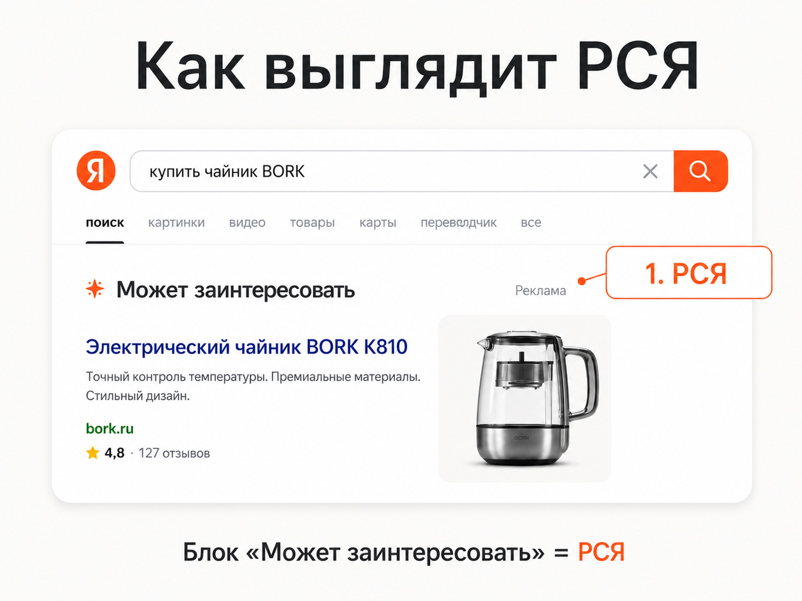
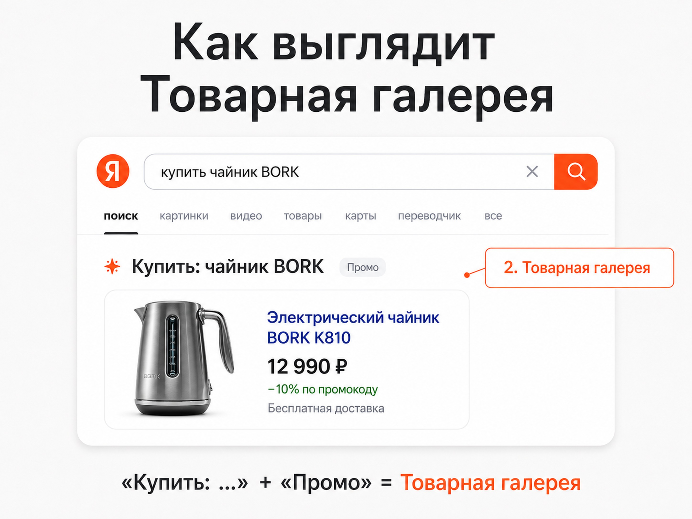
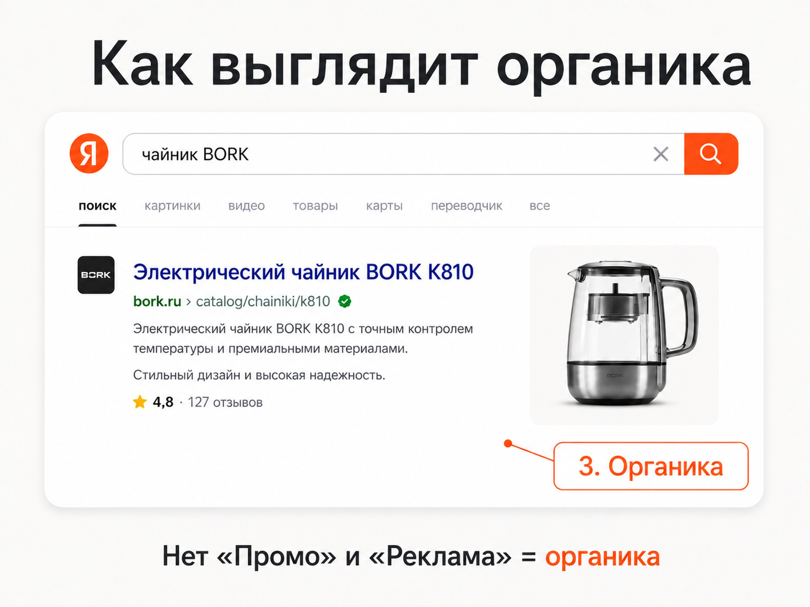
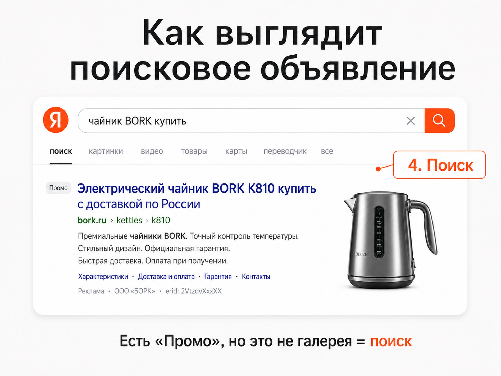

Блог о платном трафике
Как отличить товарные объявления с картинкой в поиске Яндекса
На поиске Яндекса картинка рядом с результатом не всегда означает один и тот же рекламный формат. Чаще всего путают РСЯ, Товарную галерею, обычные поисковые объявления и органическую выдачу.
На практике их можно отличить за несколько секунд, если смотреть не на саму картинку, а на подписи и структуру блока.
Короткий ответ такой:
- Блок «Может заинтересовать» + метка «Реклама» - это РСЯ.
- Блок «Предложения магазинов» + метка «Промо» или подпись «Купить: ваш запрос» + метка «Промо» - это Товарная галерея.
- Нет пометки «Промо» или «Реклама» - это органика, а не Директ.
- Есть метка «Промо», но блок не похож на Товарную галерею - это классическое поисковое объявление или динамическое место на поиске.
Если хотите глубже понять, как вообще устроены показы рекламы в Яндексе, посмотрите разбор как работает Яндекс Директ.
Таблица: как быстро определить формат
| Что вы видите | Что это значит |
|---|---|
| «Может заинтересовать» + «Реклама» | РСЯ |
| «Предложения магазинов» + «Промо» | Товарная галерея |
| «Купить: запрос» + «Промо» | Товарная галерея |
| Нет метки «Промо» / «Реклама» | Органическая выдача |
| Есть «Промо», но блок не похож на галерею | Обычное поисковое объявление или динамическое место |
Почему возникает путаница
Раньше многим было проще: есть обычное объявление в поиске, есть органический результат, и разница понятна. Сейчас в выдаче больше форматов, а сами рекламные блоки выглядят по-разному. Плюс на поиске могут появляться изображения, карточки товаров и расширенные варианты объявлений.
Из-за этого пользователь видит картинку и делает неверный вывод: если есть фото товара, значит это Товарная галерея. На самом деле это не всегда так.
Главное правило простое: смотрите сначала на подписи блока, потом на его структуру.
1. «Может заинтересовать» + «Реклама» - это РСЯ
Если в поиске Яндекса вы видите блок «Может заинтересовать», а рядом стоит пометка «Реклама», это относится к Рекламной сети Яндекса.
У такого блока есть несколько характерных признаков:
- над объявлением стоит подпись «Может заинтересовать»;
- рядом есть метка «Реклама»;
- внутри обычно один рекламный оффер;
- объявление может содержать картинку товара;
- показ часто завязан не только на сам запрос, но и на интересы пользователя.
Это важный момент. Многие думают, что раз человек находится на поиске, значит все рекламные блоки там - чисто поисковые. Но блок «Может заинтересовать» - это уже логика РСЯ. Подробнее про формат я писал в статье РСЯ в Яндекс Директ.
Как это запомнить
Если сверху написано «Может заинтересовать», не нужно дальше гадать. Для быстрой классификации этого уже достаточно: это РСЯ.

2. «Предложения магазинов» или «Купить: запрос» + «Промо» - это Товарная галерея
Товарная галерея - это отдельный формат для товарных предложений. Именно его чаще всего ищут, когда говорят: «объявления с картинками в поиске».
Опознать ее можно по таким признакам:
- есть подпись «Предложения магазинов» и пометка «Промо»;
- или сверху указано «Купить: ваш запрос» и тоже есть «Промо»;
- объявление выглядит как карточка товара;
- обычно видны цена, название товара, иногда скидка, рейтинг, магазин;
- по визуальной логике это именно товарная карточка, а не обычное текстовое объявление.
Если видите такую структуру, это Товарная галерея, а не РСЯ и не органика.
На что смотреть в первую очередь
Не на фото и не на цену. В первую очередь - на верхнюю подпись блока:
- «Предложения магазинов»;
- «Купить: ...»;
- «Промо».
Этого обычно достаточно, чтобы быстро определить формат.

3. Нет пометки «Промо» / «Реклама» - это органика
Если результат выглядит как карточка или сниппет с картинкой, но у него нет пометки «Промо» и нет пометки «Реклама», перед вами не Директ, а органический результат.
Это особенно полезно понимать при анализе конкурентов. Иногда кажется, что конкурент рекламируется по нужному запросу, но на самом деле он просто хорошо ранжируется в органике.
Признаки органики:
- нет рекламной маркировки;
- результат встроен в обычную выдачу;
- может быть изображение товара, цена или расширенный сниппет;
- переход идет на обычную страницу сайта, но без признаков рекламного блока.
Частая ошибка
Ошибка звучит так: «Раз есть фото товара, значит это рекламное объявление». Нет. Картинка сама по себе ничего не доказывает. Решает именно наличие или отсутствие рекламной метки.

4. Есть «Промо», но это не Товарная галерея - значит обычное поисковое объявление или динамическое место
Это четвертый тип, который вызывает больше всего вопросов.
Если у объявления есть пометка «Промо», но оно не похоже на карточку Товарной галереи, значит это, как правило, один из двух вариантов:
- классическое поисковое объявление;
- динамическое место на поиске.
Обычно такие объявления можно узнать по составу элементов. В них чаще встречаются:
- заголовок;
- ссылка на сайт;
- описание;
- быстрые ссылки;
- уточнения;
- цена, доставка, рейтинг или другие дополнительные элементы;
- изображение справа или внутри блока.
То есть это уже не товарная карточка в логике галереи, а обычное поисковое объявление в одном из трафаретов Яндекса.
Как отличить от Товарной галереи
Товарная галерея
- выглядит как карточка товара;
- акцент на товаре, цене и карточке;
- есть верхняя подпись вида «Предложения магазинов» или «Купить: ...».
Обычное поисковое объявление
- выглядит как рекламный сниппет;
- акцент на заголовке, тексте и ссылках;
- может содержать картинку, но не превращается в карточку галереи.

Быстрая инструкция: как отличить формат за 10 секунд
Если вы открыли выдачу Яндекса и видите объявление с картинкой, идите по такому порядку.
Шаг 1. Смотрите на верхнюю подпись блока
Если видите:
- «Может заинтересовать» - это РСЯ;
- «Предложения магазинов» - это Товарная галерея;
- «Купить: запрос» - это Товарная галерея.
Шаг 2. Смотрите на метку
Если есть:
- «Реклама» в блоке «Может заинтересовать» - это РСЯ;
- «Промо» в товарной карточке - это Товарная галерея;
- нет никаких пометок - это органика.
Шаг 3. Если есть «Промо», смотрите на структуру
Если перед вами не карточка товара, а обычный рекламный сниппет с заголовком, текстом и дополнительными элементами, это поисковое объявление или динамическое место на поиске.
Зачем вообще уметь это различать
Этот навык полезен в трех ситуациях.
1. Анализ конкурентов
Можно быстро понять, где именно конкурент покупает трафик:
- в РСЯ;
- в Товарной галерее;
- в обычном поиске;
- или вообще получает трафик из SEO.
2. Проверка своих размещений
Если вы запустили товарное продвижение, важно понимать, где реально показываетесь. Не все показы с картинкой относятся к одному и тому же формату.
3. Нормальная коммуникация со специалистом
Когда владелец бизнеса говорит: «Мы видим себя в поиске с картинкой», этого мало. Нужно уточнять, в каком именно формате идет показ. Тогда разговор становится предметным.
Если у вас уже работает реклама и нужно понять, где теряется трафик или почему формат показов отличается от ожиданий, поможет аудит Яндекс Директ.
Частые вопросы
Если в поиске есть картинка, это всегда Товарная галерея?
Нет. Картинка может быть и в РСЯ, и в поисковом объявлении, и даже в органическом результате. Сначала смотрите на подпись и метку.
Если у объявления есть «Промо», это всегда Товарная галерея?
Нет. «Промо» может быть и у обычного поискового объявления. Для Товарной галереи важна не только метка, но и структура карточки, плюс подпись вроде «Предложения магазинов» или «Купить: ...».
Какой признак самый надежный?
Самый быстрый ориентир - это сочетание подписи блока и метки.
Именно поэтому логика определения такая:
- «Может заинтересовать» + «Реклама» = РСЯ;
- «Предложения магазинов» / «Купить: ...» + «Промо» = Товарная галерея;
- без рекламной метки = органика;
- «Промо» без признаков галереи = обычный поисковый формат.
Вывод
Чтобы отличить товарные объявления с картинкой в поиске Яндекса, не смотрите только на фото товара. Этого недостаточно. Правильная последовательность такая:
- смотрите на верхнюю подпись блока;
- ищите метку «Реклама» или «Промо»;
- оценивайте структуру объявления.
В большинстве случаев этого хватает, чтобы за несколько секунд понять, что перед вами: РСЯ, Товарная галерея, органика или обычное поисковое объявление. Как это выглядит на реальных проектах, можно посмотреть в разделе кейсы по Яндекс Директу.